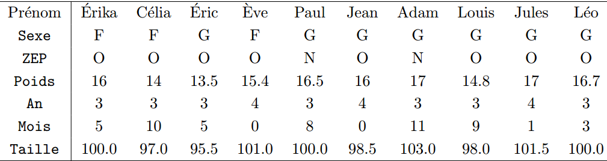

pour voir les raccourcis clavier cliquer sur tools puis sur keyboard Shortcuts help oubien cliquer sur Alt + shift + k. Quelques raccourcis que j’utilise régulièrement pour mieux organiser mes syntax:
Pour commenter ou enlever un commentaire ctrl + shift + c
Pour exécuter une ou des lignes selectionnées ctrl + enter
Pour créer une section ctrl + shift + R
Pour exécuter une section ctrl + shift + t
pour supprimer une ou des lignes ctrl + D
R permet de manipuler plusieurs bases de données simultanément à travers les objets. Un objet est tout simplement une affectation. Pour créer un objet cliquer sur Alt + 6 ou Alt + -. Dans l’exemlpe ci-desous nous allons créer 3 objets a, b et d
a <- 2
b <- 10
d <- a+bPour créer des chaines de caractères il faut mettre l’objet entre quote ” “.
Exemple:
nom <- "abdoulaye"
pays <- "togo"Un vecteur correspond à une colonne dans Excel. Pour créer des vecteurs on utilise quatre fonctions : collect c(), répeter rep() et les fonctions séquence : et seq()
prenom <- c("Idrissa", "mawli", "Abdoulaye")
Pays <- c("Senegal", "Togo","Mali")
age <- c(32,35,34)pour répeter Mawli 100 fois dans une colonne excel on l’écrit 100 fois oubien on l’écrit une fois puis on tire vers le bas pour l’avoir 100 fois. Qu’en est-il s’il faut écrire Mawli 10000 fois ? Avec r il existe une fonction simple qui permet d’écrire mawli 10000 fois en une seule ligne de code. Voici quelques exemples ci-dessous
mawli_10000_fois <- rep("mawli", 10000)
age2 <- c(32,35,rep(34,2))
rep("mawli", 100)## [1] "mawli" "mawli" "mawli" "mawli" "mawli" "mawli" "mawli" "mawli" "mawli"
## [10] "mawli" "mawli" "mawli" "mawli" "mawli" "mawli" "mawli" "mawli" "mawli"
## [19] "mawli" "mawli" "mawli" "mawli" "mawli" "mawli" "mawli" "mawli" "mawli"
## [28] "mawli" "mawli" "mawli" "mawli" "mawli" "mawli" "mawli" "mawli" "mawli"
## [37] "mawli" "mawli" "mawli" "mawli" "mawli" "mawli" "mawli" "mawli" "mawli"
## [46] "mawli" "mawli" "mawli" "mawli" "mawli" "mawli" "mawli" "mawli" "mawli"
## [55] "mawli" "mawli" "mawli" "mawli" "mawli" "mawli" "mawli" "mawli" "mawli"
## [64] "mawli" "mawli" "mawli" "mawli" "mawli" "mawli" "mawli" "mawli" "mawli"
## [73] "mawli" "mawli" "mawli" "mawli" "mawli" "mawli" "mawli" "mawli" "mawli"
## [82] "mawli" "mawli" "mawli" "mawli" "mawli" "mawli" "mawli" "mawli" "mawli"
## [91] "mawli" "mawli" "mawli" "mawli" "mawli" "mawli" "mawli" "mawli" "mawli"
## [100] "mawli"Pour des sequences de valeurs successives on utilise la foncion deux points : Pour des séquences avec des pas ou une taille on utilise la fonction seq
testsequence <- 10:30
testsequence2 <- seq(from = 10, to = 100, by = 5)
testsequence3 <- seq(10,100,5)Pour metre tous ces vecteurs ou colonnes dans la même base de données on utilise la fonction data.frames
donne <- data.frame(prenom, Pays, age)Pour avoir les dimensions d’une base de donnée, ou avoir un aperçu sur les différentes avariables et leur type on utilise respectivement les fonctions dim et str(). Pour avoir le type d’une variable on peut utiliser la fonction class()
# dimension de la base de donnée
dim(donne)## [1] 3 3# variables et types
str(donne)## 'data.frame': 3 obs. of 3 variables:
## $ prenom: chr "Idrissa" "mawli" "Abdoulaye"
## $ Pays : chr "Senegal" "Togo" "Mali"
## $ age : num 32 35 34# type de la variable
class(donne$prenom)## [1] "character"si vous voulez directement accéder aux variables sans utiliser le symbol $ comme dans l’exemple ci-dessus il faut utiliser la fonction attach()
attach(donne)## Les objets suivants sont masqués _par_ .GlobalEnv:
##
## age, Pays, prenomclass(age)## [1] "numeric"Dans cette partie il nous allons importer une base de donnée sans utiliser des packages. Avant d’importer la base il faut d’abord identifier le repertoire de travail grâce à la fonction getwd(). Pour changer le repertoire de travail la fonction setwd() peut être utilisée
getwd()## [1] "C:/Users/USER MSI/Documents/R Project/initiationFR"# setwd("C:\\Users\\USER MSI\\Documents\\Data-scientist group")Dans l’exemple ci-dessous nous allons importer les données du Burkina disponibles dans la plateforme dataviz du PAM : https://dataviz.vam.wfp.org/economic_explorer/prices
getwd()## [1] "C:/Users/USER MSI/Documents/R Project/initiationFR"# changer le repertoire de travail
# setwd("votre repertoire")
dataset <- read.csv("WFP_2022Jul23_BurkinaFaso_FoodPricesData.csv")
str(dataset)## 'data.frame': 40909 obs. of 11 variables:
## $ Country : chr "Burkina Faso" "Burkina Faso" "Burkina Faso" "Burkina Faso" ...
## $ Admin.1 : chr "BOUCLE DU MOUHOUN" "BOUCLE DU MOUHOUN" "BOUCLE DU MOUHOUN" "BOUCLE DU MOUHOUN" ...
## $ Market : chr "Tougan" "Tougan" "Tougan" "Tougan" ...
## $ Commodity : chr "Rice (imported)" "Rice (imported)" "Rice (imported)" "Rice (imported)" ...
## $ Price.Type : chr "Retail" "Retail" "Retail" "Retail" ...
## $ Year : int 2020 2020 2020 2020 2020 2020 2020 2020 2020 2021 ...
## $ Month : int 4 5 6 7 8 9 10 11 12 1 ...
## $ Price : num 400 400 400 400 400 400 400 400 400 400 ...
## $ Unit : chr "KG" "KG" "KG" "KG" ...
## $ Currency : chr "XOF" "XOF" "XOF" "XOF" ...
## $ Data.Source: chr "SIM/SONAGESS" "SIM/SONAGESS" "SIM/SONAGESS" "SIM/SONAGESS" ...# Pour tabuler le nombre d'année ou la région
table(dataset$Year)##
## 1992 1993 1994 1995 1996 1997 1998 1999 2000 2001 2002 2003 2004 2005 2006 2007
## 132 132 132 132 132 132 132 132 132 132 142 420 438 456 504 480
## 2008 2009 2010 2011 2012 2013 2014 2015 2016 2017 2018 2019 2020 2021 2022
## 660 711 744 744 762 844 840 3373 3540 4199 4228 4295 4784 4958 2467table(dataset$Admin.1)##
## BOUCLE DU MOUHOUN CASCADES CENTRE CENTRE-EST
## 6354 1526 2116 3260
## CENTRE-NORD CENTRE-OUEST CENTRE-SUD EST
## 2712 2783 2195 4637
## HAUTS-BASSINS NORD PLATEAU-CENTRAL SAHEL
## 3365 2149 1911 4559
## SUD-OUEST
## 3342Pour avoir les modalités d’une variable qualitative il faut d’abord changer son type en facteur.
dataset$Admin.1 <- as.factor(dataset$Admin.1)
class(dataset$Admin.1)## [1] "factor"# modalités et nombre de modalités
levels(dataset$Admin.1)## [1] "BOUCLE DU MOUHOUN" "CASCADES" "CENTRE"
## [4] "CENTRE-EST" "CENTRE-NORD" "CENTRE-OUEST"
## [7] "CENTRE-SUD" "EST" "HAUTS-BASSINS"
## [10] "NORD" "PLATEAU-CENTRAL" "SAHEL"
## [13] "SUD-OUEST"nlevels(dataset$Admin.1)## [1] 13Créer les vecteurs suivantes
Create the following vectors
vec1 = 1 2 3 4 5 1 2 3 4 5 1 2 3 4 5
vec2 = 1 1 1 2 2 2 3 3 3 4 4 4 5 5 5
vec3 = 1 1 2 2 2 3 3 3 3 4 4 4 4 4
vec4 = idrissa idrissa idrissa idrissa idrissa idrissa Mawli Mawli Mawli Mawli Mawli Mawli Mawli Mawli Mawli Mawli Mawli Abdoulaye Abdoulaye Abdoulaye Abdoulaye Abdoulaye Abdoulaye Abdoulaye Abdoulaye Abdoulaye Abdoulaye Abdoulaye Abdoulaye Abdoulaye Abdoulaye Abdoulaye
A patir de l’image ci-dessous Choisissez la fonction R appropriée pour enregistrer les données de chacune des variables précédentes dans des vecteurs que vous nommerez Individus, Poids, Taille et Sexe
Calculez la moyenne des variables pour lesquelles cela est possible.
Calculez l’indice de masse corporelle (IMC) des individus et regrouper les valeurs obtenues dans un vecteur nommé IMC. Indication IMC = poids/(taille/100)^2
Créer une base de donnée dans laquelle vous aurez Individus, Poids, Taille, Sexe et IMC 
Importez le fichier base2.csv dans un objet R nommé caracteristique (le fichier est disponible à partir du lien https://github.com/idiise/Donne_Group_Data-Scientist )
Combien y a t’il d’individu , de variable ? de quel type sont les variables ?
vérifiez au moyen des fonctions class() et levels() que vos variables sont correctement structurées. Quelles sont les modalités des variables ?
Référence: le logiciel R Maîtriser le langage effectuer des analyses (bio)statistique
Référence: R-for-Statistics